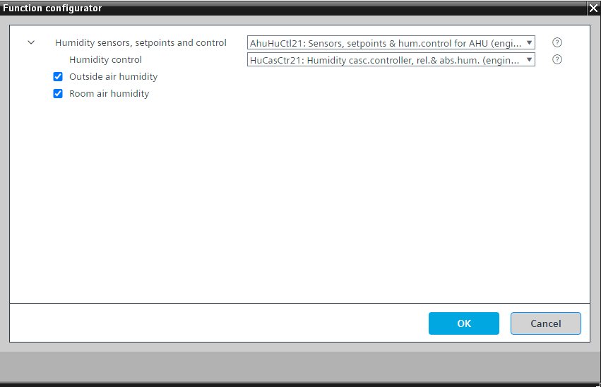

[AhuHuCtl21] 空气处理机组的传感器、设定值和湿度控制
Program block, name / node subtype: [AhuHuCtl21] Sensors, setpoints and humidity control for air handling unit
Library hierarchy: Ventilation and air conditioning equipment
Family: AhuHuCtl
项目树 | 图表 |
|---|---|
|
|
|


Configurator


程序块存储在没有 I/Os. 的库中 使用auto-create and auto-connect函数创建 I/Os 和 /or 将它们连接到接口块，例如 R_A、CMD_B。或者，从包含库中预定义 I/Os 的文件夹中取出 I/Os，并从工厂中取出 /or，并将它们连接到接口块。
执行湿度控制（并且 /or 限制供应湿度控制的设定点）并包含加湿和除湿的设定点以及湿度传感器。
支持并可配置排风湿度控制 (HuCasCtr21) 或送风湿度控制 (HuSuCtr21) 的级联控制（可选）。
串级控制按以下方式工作：加湿和除湿设定值（以 %rH 为单位）提供给 HuCasCtr21 中的串级控制器，该控制器向加湿器和冷却盘管（或加热/cooling 盘管）发出送风湿度设定值（以 g/kg 为单位）。它们的控制器控制送风绝对湿度，并具有可选的送风相对湿度限制控制器。
在级联控制的情况下，在加湿器和冷却盘管（或加热/cooling盘管）中使用HuCtr21（绝对湿度控制器）非常重要。
送风湿度控制按以下方式工作：加湿和除湿设定值（以 %rH 为单位）通过 HuSuCtr21 发送，并将送风湿度设定值（以 %rH 为单位）发送至加湿器和冷却盘管（或加热/cooling 盘管）。它们的控制器控制送风的相对湿度。
在进行送风湿度控制的情况下，在加湿器和冷却盘管（或加热/cooling盘管）中使用HuCtr22（相对湿度控制器）非常重要。
加湿和除湿的设定值是为 extract/room 空气湿度级联控制预设的。在送风湿度控制的情况下，加湿和除湿的设定点应设置得更接近，且具有较窄的零能带。
程序中的参数定义了送风湿度传感器的警报或故障对设备行为的影响。它的预设方式使得设备在发生警报或故障时不会关闭。
该程序块具有以下可选功能：
Option: Outside air humidity (1xAI)
创造外部空气湿度。
Option: Room air humidity (1xAI)
创造室内空气湿度。
室内空气湿度可用于级联控制。这需要对程序进行一些小的修改。
姓名 | 描述 | 类型 | 报警/通知类 | 趋势/类型 |
|---|---|---|---|---|
HuSu | Supply air humidity | AI：模拟输入 | No | 是的，1 |
HuEx | Extract air humidity | AI：模拟输入 | No | 是的，1 |
SpDhu | Setpoint for dehumidification | AI：模拟输入 | No | 是的，4 |
SpHum | Setpoint for humidification | AI：模拟输入 | No | 是的，4 |
HuCtl | Humidity control | N/A | N/A |
姓名 | 描述 | 类型 | 报警/通知类 | 趋势/类型 |
|---|---|---|---|---|
HuOa | Outside air humidity | AI：模拟输入 | No | 是的，3 |
HuR | Room air humidity | AI：模拟输入 | No | 是的，3 |